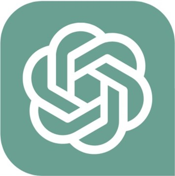

|  | |
| Classification | LLMs Interactive Artificial Intelligence |
|---|---|
| Service | a partial charge |
| Development company | OpenAI |
| Day of the announcement was made |
11M 30D 2022Y(early beta) 5M 24D 2023Y(stabilized beta) |
| Mobile | iOS | iPadOS |
| Foundation | GPT-3.5 | GPT-4 |
| User | Approximately 200 million people (February 2023/estimated) |
| Subscribers | Approximately 1 million people (February 2023 / estimated) |
| Gpt link | Go to Use |
CHATGPT (Chat GPT) is an interactive artificial intelligence service based on GPT-3.5 and GPT-4. After signing up for the Openai platform, It can be used as a paid subscriber (CHATGPT Plus), and AI can be used by entering the chatbot as if you are registering and chatting. It can also be used by entering the OpenAI platform with a smartphone. The conversation that is entered here is called 'prompt', AI's response to this is expressed as 'response'. The names of each chat room are generated according to their first questions and answers as soon as they talk, but they can be changed at any time. On March 14, 2023, GPT-4, the latest language model of Openai, was released, and only CHATGPT Plus subscribers can be used. On March 23, 2023, CHATGPT Plugins was released. Openai itself, such as web browsing and code interpretation of code Other external plugins such as Wolfram Alpha, Zaiper, and Opentable have been applied. Since May 2023, the GPT-4 web browsing mode has been added to the CHATGPT Plus subscriber. If you use this mode, search the Internet like Bing AI and inform information. Like Bing AI, it also provides sources of crawled pages. As a result, it is possible to inform the recent information such as the weather, exchange rate, and stock prices that turn into every moment. However, depending on the process of crawling, the response generation speed is inevitably slowed down, and if you crawl more pages, It may take more than a few minutes to get one answer. Also, even if the GPT-4 gets information on a reliable website, The data obtained through crawling is likely to cause hallucinations, so check the crawled source and It is important to judge correctly. As Bingai did, be aware that you can eat the search as a bizarre keyword. In the long run, it will serve as an app store of CHATGPT, which will replace mobile app ESDs such as the current Google Play or App Store. On the desktop or laptop, the line breaks can be used by pressing the shift key and enter key at the same time, and on the smartphone, until the transmission button is pressed Since the chat is not transmitted, the keyboard can be used by touching the part corresponding to the enter. Also, during the production of answers You can stop creating answers with the 'Stop Generating' button. And all the questions in the chat room can be modified, but After the dialogue, the existing prompt that he entered after the dialogue disappears, and a new conversation continues. The response that has already been created can also be pressed by pressing 'Regenerate Response' to create a response again. If you don't like the answer, you can ask for another answer with the Try Again button, and I like the current answer (👍) or I hate (👎). It can be evaluated. If the answer is disconnected due to network instability or web browser issues, “Keep telling me.”, “Our response was interrupted.”, “Keep Going.” If you appeal to the fact that the answer was cut off by entering the back, Answer again. From May 16, 2023, if the answer is cut off due to restrictions on the number of letters, click the Continue Generating button to click Write the answer from the conventional message. Even in a free version, you can use the GPT-3.5 model, a language model that 'conversation' is. The paid version corresponding to the plus is available for the GPT-4 model and the default model corresponding to the GPT-3.5. The initial paid version is I gave you three specs of each model, but the GPT-4 is slow and the number of prompt inputs is limited, Accurate information comes out because it goes through more reasoning. Currently, it just describes the model (for useful use and performance). You must pay $ 20 a month, and even if you switch to a fee, the free version of the dialogue will not be deleted. When using the GPT-4 model, the green color is Not a black icon, the model of the user's 'conversation' was described. It is now purple. When a plug -in is installed and a condition to operate the plug -in in the user's prompt is found, the plug -in is triggered. During operation, it changes to the plugin. On April 25, 2023, the ability to export one part of the conversation was added. In case of dealing with sensitive information, only when using unhealthy use, only the functions that do not store the chat history that can be found in Openai, etc. have been added, Openai said it will be launched in the future. CHATGPT is to answer questions according to artificial intelligence in conversation with users. It is a designed language model, and OpenAI said in a blog post, “Chatgpt answers additional questions in the form of dialogue, recognizes mistakes, "We can challenge and reject inappropriate requests for unusual premises."